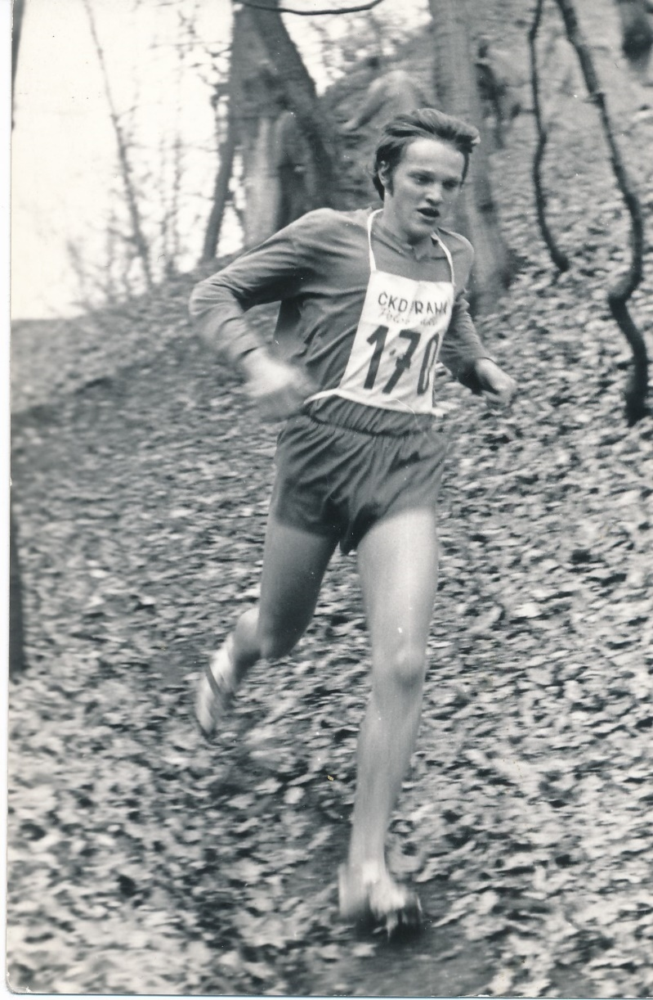
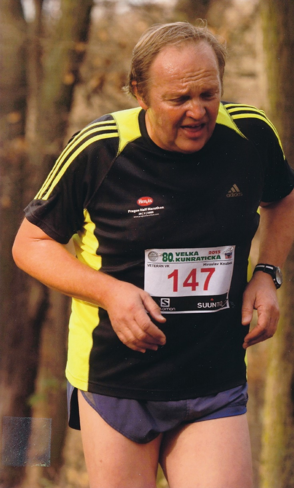
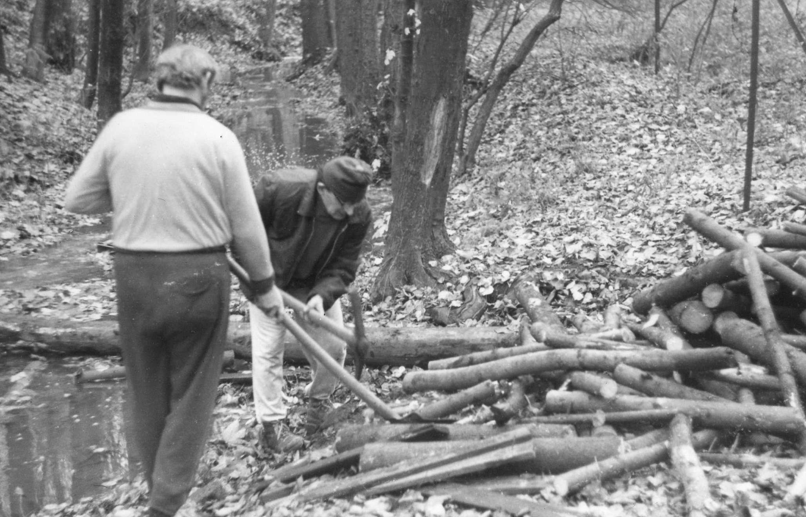
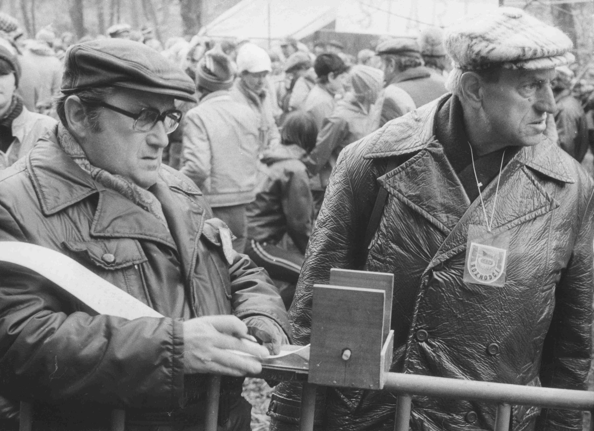
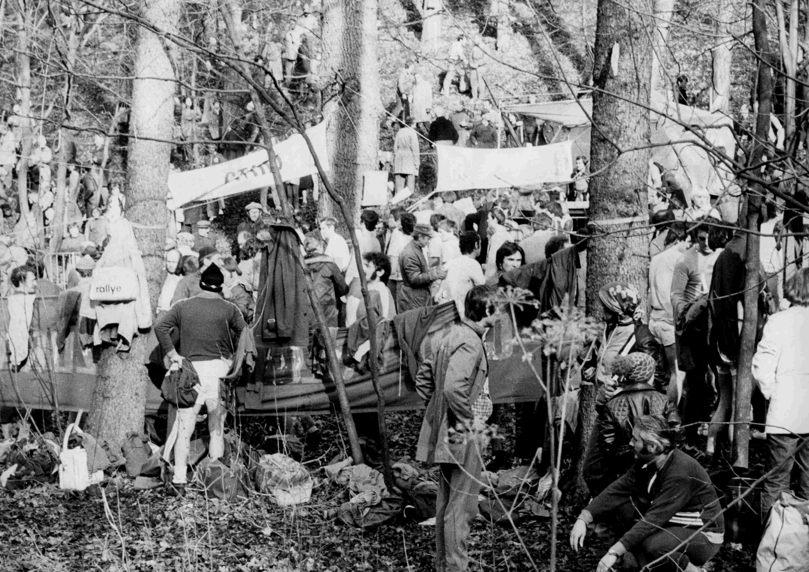
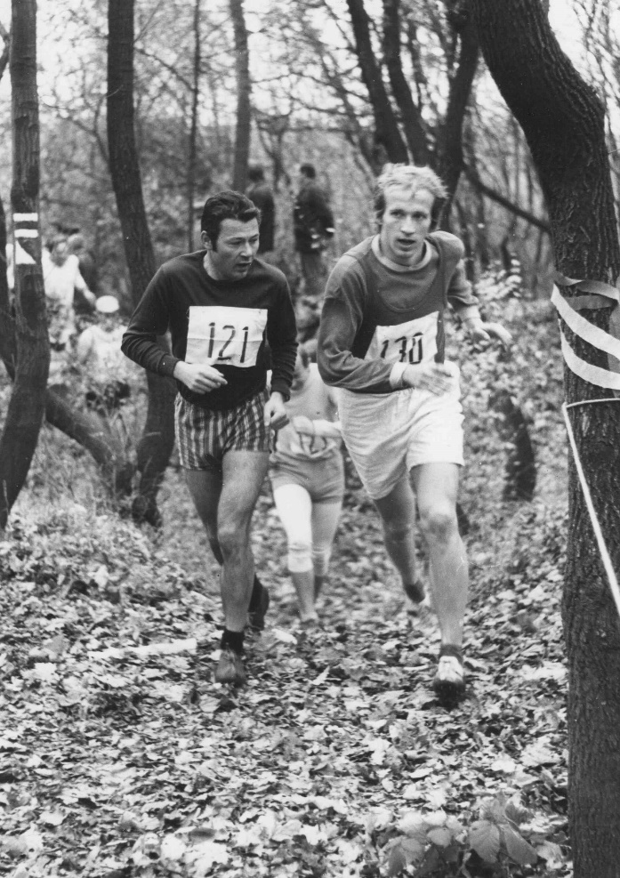
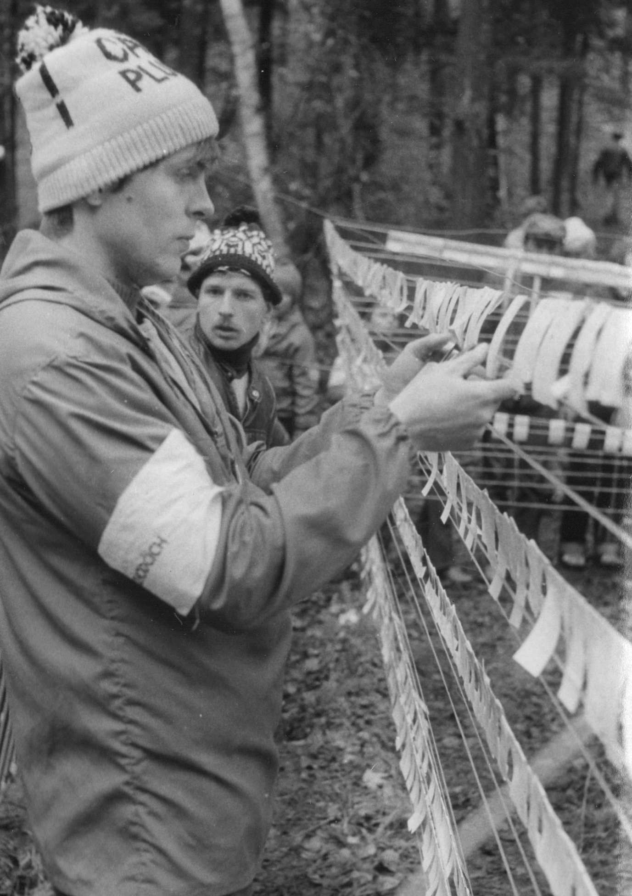
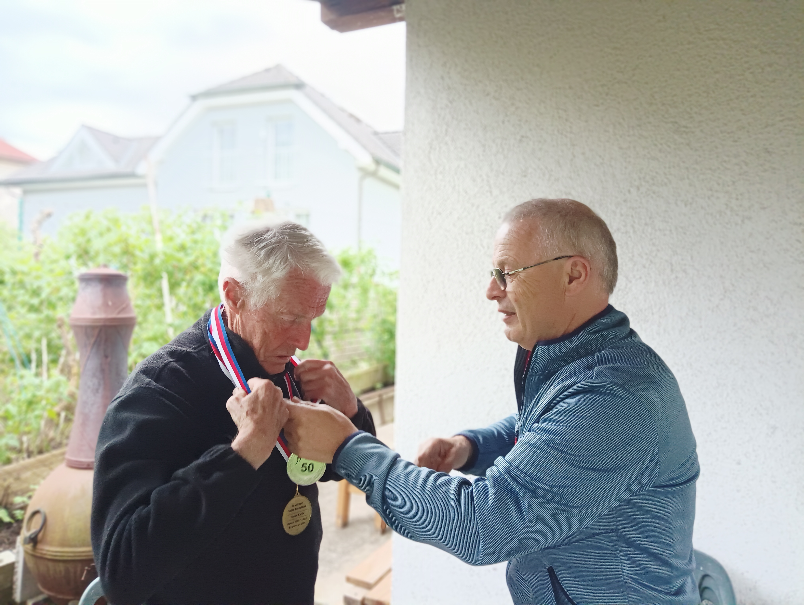
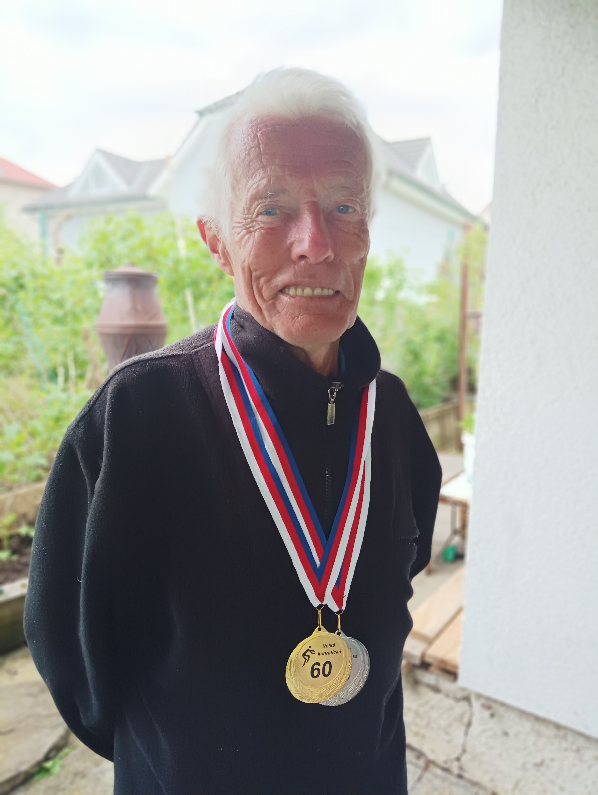

Veterán
Velké kunratické
Časopis určený veteránkám, veteránům a všem příznivcům legendárního závodu
Číslo 4 / květen 2023 Předchozí čísla: XI / 2020, V / 2022, XI / 2022
Uznání organizátorům Velké kunratické
Při každé sportovní akci, Velkou kunratickou nevyjímaje, se píše především o vítězích, rekordmanech, aktivních závodnících. Přitom každému jen trochu zasvěcenému je jasné, že závod netvoří jen jeho účastníci. Nesmírně důležitou roli mají pořadatelé, a u závodu takového rozsahu jako je Velká kunratická, je jejich práce obrovská. Za to patří všem, kdo závod připravují, obrovský obdiv a uznání. Rád bych jejich nepostradatelnou, mimořádně záslužnou, a přiznejme si, mnohdy nedoceněnou práci přiblížil čtenářům „Veterána VK“. Oslovil jsem dva z organizátorů Velké kunratické, z nich na otázky našeho časopisu odpověděl Mirek Koubek (nar. 1953), dlouholetý šéf organizačního výboru a od svých dětských let také aktivní závodník, nyní již veterán Velké kunratické s 41 absolvovanými starty.
Mirek Koubek – závodník, pořadatel, veterán
 
Dvakrát Mirek Koubek ve Velké kunratické: 1970 (poprvé přes Hrádek) a 2013.
Mnozí závodníci toho o organizaci Velké kunratické moc neví, často ani ti, kteří se účastní závodu každoročně. Můžeš jim práci pořadatelů trochu přiblížit? Kdo závod zajišťuje a kolik lidí se podílí na organizaci VK?
Organizační výbor se skládá ze čtyř lidí. Těch, kteří se podílí na přípravě závodu, je však mnohonásobně víc. V posledních týdnech před závodem a v den závodu se do příprav zapojí převážná většina členů atletického oddílu Spartak Praha 4. Některé činnosti zajišťují též lyžaři Skiklubu Praha 4.
Jsi šéfem organizačního týmu VK. Jak dlouho už zastáváš tuto funkci a co je její hlavní náplní?
Šéfem organizačního výboru jsem od 71. ročníku (2004), předtím jsem několik let dělal zástupce Emilu Pospíšilovi. V OV máme funkce rozdělené, já zajišťuji komunikaci s úřady (Magistrát HMP, ÚMČ Praha-Kunratice, lesní správa) a většinu služeb (dopravní opatření, plůtky, WC, odvoz odpadků, čaj). Cením si toho, že během mého působení se mi podařilo navýšit počet běžců přes Hrádek ze 1750 na 2700 a najít kompromis s památkáři.
Jaké je specifikum tak rozsáhlého závodu, jakým je Velká kunratická? Čím se liší od jiných sportovních akcí?
Velké kunratické se zúčastňují celé rodiny, a to od nejmenších dětí (od 4 let) až po seniory. Většina účastníků se potom pravidelně vrací. Mnozí z těch, kteří na VK začínali v dětských kategoriích, to časem dotáhnou až do veteránů. Dalším specifikem je start po dvojicích, což v kombinaci s počtem startujících a množstvím kategorií vede k tomu, že se závod protáhne na celý den.
Vlastní závod končí kolem 14 hodin, pro nás tím ale začíná další fáze – je nutné všechno uklidit a uvést les do původního stavu. Musím ocenit, že závodníci se chovají slušně, pohybují se ve vymezeném prostoru a respektují požadavky ochranářů.
V čem spočívá příprava a vlastní organizace Velké kunratické?
Většina přípravy je obdobná jako při jiných závodech. Na VK je navíc nutné vyřídit vjezd do lesa, natáhnout elektřinu do lesa, projít tratě a zajistit odstranění nebezpečných stromů, během dvou brigád připravit zázemí (louku s výdejem čísel, výsledky atd.) a tratě. Jak už jsem uvedl, po skončení závodu je nutné do setmění vše uklidit, protože hned v pondělí se prostor závodu předává hajnému.
Kdy a čím začíná příprava na další ročník?
Příprava začíná v podstatě hned po závodě, kdy se provede vyhodnocení a řeší se případná zdokonalení a eventuální změny. Letos bylo nutné znovu podat žádost o povolení závodu, které bývá vydáváno na pět let a v loňském ročníku skončilo.
Ty sám VK už dlouhá léta běháš. Kteří pořadatelé si ještě najdou čas na to, aby si závod sami zaběhli?
Z organizačního výboru běhám pravidelně jen já, loni běžel ještě Honza Koutník, který má na starosti dětský start. Běhají ještě další pořadatelé, někteří už mezi veterány.
Vzpomeneš si na své první starty v Kunraticích?
Úplně poprvé jsem běžel v nějaké předžákovské kategorii už v roce 1963. Hrádek jsem zdolal poprvé v roce 1970, můžeš si mě prohlédnout na fotografii. Tento start ale nemám uznaný, protože jsem byl ještě dorostenec a hlavní trať jsem běžel jen proto, že jsem zmeškal svůj start. Velkou kunratickou jsem nikdy neuměl běhat, osobní rekord mám 13:54 z roku 1974.
Chtěl bys něco vzkázat účastníkům Velké kunratické?
Přeji jim pevné zdraví, aby se mohli co nejdéle Velké kunratické zúčastňovat a aby do Kunratic vodili i své potomky.


Práce organizátorů a rozhodčích – 70. léta. Na prvním snímku s krumpáčem dlouholetý ředitel VK Emil Pospíšil. Na druhé fotografii rozhodčí. Pokud je poznáte, napište nám.

Zvládnout takovýto mumraj v prostoru startu a cíle nebylo nikdy jednoduché.


Opět sedmdesátá léta. Vzpomínáte na vyvěšování výsledků na provázcích po vzoru orientačních běžců? Na posledním snímku vpravo autor fotografií Vláďa Podroužek.
Rok 1995 – 62. Velká kunratická
Počasí, účast, celkové výsledky
„Počasí závodu přálo, teplota byla přiměřená ročnímu období, nepršelo, tratě byly kromě několika kratších úseků v dobrém stavu, hladina v potoce byla normální. Závod proběhl v pohodě a bez rušivých příhod. Prostor závodu nebyl přeplněn a opatření pro ochranu přírody byla dodržována. Více než kdy jindy bylo u rybníka stánků s občerstvením a sportovními potřebami.“ To je citace z výsledkové brožury k 62. ročníku Velké kunratické. Předposlední věta o dodržování opatření je připomínkou předchozích sporů pořadatelů s ochranáři, vyhrocené vztahy se vracely do normálu. V brožuře byl zmíněn i význam výpočetní techniky při zpracování výsledků a úspěšné použití kapesních počítačů PSION v cíli „Nad mlýnem“. Viditelnou změnou oproti dřívějším ročníkům bylo předávání cen od sponzorů (běžecké boty, hodinky, trička, brožury FTVS), dodatečně byly předány peněžité ceny za umístění v dospělých a juniorských kategoriích. Z celkového počtu 2499 přihlášených se závodu zúčastnilo 2317 startujících.
Celkovým vítězem v hlavní mužské kategorii se stal Rudolf Ropek z Dukly Liberec časem 11:47,6 před Vítem Pospíšilem 11:55,9 a Tomášem Janovským 12:07,1. Na ženské trati byla nejrychlejší starší žákyně Alena Rücklová (4:55,6), která zopakovala triumf své starší sestry Zuzany z minulého roku. Ta byla tentokrát nejrychlejší mezi dorostenkami, celkově její čas stačil „až“ na 8. místo.
Nástup silné generace veteránů
Polovina devadesátých let byla ve znamení nástupu silné veteránské generace. Dvaceti startů dosáhla řada čtyřicátníků, kteří běhali Kunratickou už od dorosteneckých let a mezi veterány vstoupili s výkonností, kterou úspěšně konkurovali podstatně mladším soupeřům. Mezi veterány VK vstoupili naopak jako nejmladší a ve své kategorii pak neochvějně kralovali po mnoho dalších let. V roce 1995 poprvé běžel mezi veterány František Pechek. Dosáhl skvělého času 13:13,5, a přesto nevyhrál. Prvenství v naší kategorii obhájil Aleš Špičák, jehož výkon 13:04,4 byl dokonce novým veteránským rekordem. Bylo jasné, že kdo chtěl v kategorii veteránů atakovat nejvyšší příčky, musel se hodně snažit, protože dvacátý start v roce 1995 absolvoval Miloš Smrčka a časem 12:43,8 se zařadil na celkově 10. místo napříč věkovými kategoriemi.
Podmínka 20 absolvovaných startů na hlavní trati vede k tomu, že někteří závodníci poprvé vkročí mezi veterány VK až v pokročilejším věku. Je obdivuhodné, když přesto dokáží míchat pořadím na předních místech, jako se to v roce 1995 podařilo vrchlabskému běžci Janu Bucharovi. Jeho výkon 15:07,3 (v 62 letech!) byl obdivuhodný a v kategorii veteránů stačil na celkové 11. místo, byť jeho soupeři byli o dvě dekády mladší. S velkým náskokem vyhrál kombinované hodnocení a tuto výsadní pozici si udržel dlouhá léta.
Počínaje kategorií čtyřicátníků patřila většina předních míst ve všech věkových kategoriích veteránům. První výjimkou byl zmíněný Miloš Smrčka, vítěz kategorie nad 40 let, další pak první trojice v kategorii 50-59 let, kde zvítězil Tomáš Kohout (14:00,7), před Balšánkem (14:32,3) a Šusterkou (14:53,9). Kohout měl do veteránské kategorie ještě hodně daleko, ale vysokou výkonnost si udrží a po vstupu mezi veterány VK v roce 2010 se stane okamžitě premiantem kombinovaného hodnocení. Daleko do kategorie veteránů měl i Václav Šusterka, dočká se teprve v roce 2005. Vladimír Balšánek byl československým reprezentantem na dlouhých tratích a Velkou kunratickou čtyřikrát vyhrál, v roce 1964 dokonce vytvořil traťový rekord 11:38,6, který překoná až Vlastimil Zwiefelhofer. Po delší odmlce se do Kunratic vrátil v roce 1993 v kategorii nad 50 let a počet jeho startů se nakonec zastaví na čísle 16.
A jak dopadly veteránky? Zatím nijak. Ačkoli mnohé běžkyně pilně sbíraly starty na své kratší trati, na vypsání ženské veteránské kategorie si musely ještě tři roky počkat.
Na startu budoucí veteráni a veteránky
Jako každoročně, i v roce 1995 najdeme ve všech věkových kategoriích závodníky a závodnice, kteří za pár let, někdy i desetiletí, rozšíří řady veteránů a veteránek VK. Některým chybělo ke vstupu mezi veterány jen pár startů, ale dnes se podíváme na ty, kteří s běháním teprve začínali v kategoriích mládeže. A bylo jich opravdu dost, snad si někteří z nich o sobě rádi přečtou.
Uvedeme zde některá jména, která nám padla do oka z tehdejší výsledkové listiny. Začneme těmi nejmladšími, kategorií mladších žáků. Na 2. místě v roce 1995 skončil Jaromír Odvárka, na 10. místě Tomáš Hladina, tehdy třináctiletí kluci, dnes oba veteráni s 22 starty, kteří v loňském ročníku VK vybíhali dokonce spolu ve dvojici. Řada dnešních veteránů startovala mezi staršími žáky, ve výsledcích jsme našli jména: Jan Mlátek (skončil 12.), David Michalička (18.), Jan Jurák ml. (19.), Jindřich Maryška (24.), Michal Novotný (42.), Jan Musil (43.). Všichni jmenovaní startovali v roce 2022 už mezi veterány se startovními čísly od 292 do 297. Mezi dorostenci z roku 1995 objevíme jméno Jana Kervitcera ml. (skončil 5.), řadu dalších veteránů bychom našli v kategorii juniorů a v kategoriích do 29, 39 a 49 let.
Obdobné je to v kategoriích žen a dívek. V nejstarší kategorii (což byla v roce 1995 kategorie nad 40 let) startovaly budoucí veteránky Růžena Sochorcová (6:08,1, 5.místo), Milada Růžičková (6:16,6, 7.), Miloslava Ročňáková (6:53,0, 16.), Milena Hovorková (7:15,6, 19.), Anna Klausová (7:32,2, 21.) a Míla Dolečková (8:48,2, 30.). V kategorii 30-39 let jsme našli na předních místech Marii Pštrossovou (6:07,5, 2.), Hanu Dvorskou (6:23,3, 3.) a Ivanu Pilařovou (6:48,0, 8.). V kategorii 20-29 let běžela Lenka Borovičková (5:35,4, 9.), mezi juniorkami Hana Mlátková (5:52,8, 3.) a mezi staršími žákyněmi Kristina Jakubcová (6:20,0, 18.). Pokud jsme na někoho zapomněli, prosíme, napište nám.
VYČTENO Z VÝSLEDKů 62. ROČNÍKU 1995
VK 1995 – veteráni (207 start.) Kombinované hodnocení 1995
| 1. Aleš Špičák | (1955) | 13:04,4 | 1. Jan Buchar | (1933, 21 startů) | 238,661 |
| 2. František Pechek | (1953) | 13:13,5 | 2. Karel Matzner | (1929, 24) | 234,830 |
| 3. Miroslav Laholík | (1952) | 13:34,6 | 3. Josef Pejsar | (1923, 32) | 233,750 |
| 4. František Peterka | (1949) | 13:35,7 | 4. Josef Zlatníček | (1934, 22) | 233,395 |
| 5. Pavel Novák | (1953) | 14:02,4 | 5. Karel Šerpán | (1931, 44) | 233,291 |
| 6. Zdeněk Lacga | (1952) | 14:07,2 | 6. Oldřich Novák | (1931, 27) | 226,392 |
| 7. Luděk Sedlák | (1954) | 14:21,7 | 7. Miroslav Javorský | (1936, 25) | 223,538 |
| 8. Václav Kroupar | (1947) | 14:35,6 | 8. Milan Vančura | (1935, 24) | 223,498 |
| 9. Václav Švec | (1953) | 14:41,6 | 9. Rudolf Kadeřábek | (1939, 22) | 221,412 |
| 10. Jiří Šustera | (1946) | 15:07,2 | 10. Karel Urban | (1939, 21) | 220,821 |
VK 1995 – veteráni 40-49 VK 1995 – veteráni 60-69
| 1. Aleš Špičák | (1955) | 13:04,4 | 1. Jan Buchar | (1933) | 15:07,3 |
| 2. František Pechek | (1953) | 13:13,5 | 2. Josef Zlatníček | (1934) | 15:52,4 |
| 3. Miroslav Laholík | (1952) | 13:34,6 | 3. Karel Šerpán | (1931) | 16:41,0 |
VK 1995 – veteráni 50-59 VK 1995 – vet. nad 70 (neoficiálně)
| 1. Ivan Pohorský | (1944) | 15:59,6 | 1. Josef Pejsar | (1923) | 19:46,4 |
| 2. Jiří Budka | (1941) | 16:07,1 | 2. Bedřich Klimeš | (1921) | 23:52,4 |
| 3. Karel Urban | (1939) | 16:14,9 | 3. Jiří Novák-Johny | (1922) | 25:50,5 |
Počty startů po 62. ročníku: 56 – Přemysl Novotný (ročník 1918, v roce 1995 běžel za 26:19,2), 54 – Jiří Novák, 53 – Obešlo, 51 – Šilhavý, 47 – Horáček, Trkal, 44 – Kreuzer, Moc, Šerpán, Štorkán, 43 – Čmelinský, Čuhel, Hanousek, Chaluš, 42 – Kabátník.
Rok 1937 – 4. Velká kunratická
Dne 14. listopadu 1937 nepršelo, bylo však velmi chladno, oficiální naměřená teplota v Praze se toho dne pohybovala mezi 1°C až 4°C. Čtvrtého ročníku Velké kunratické se zúčastnilo 28 běžců a vítězem se stal Jaroslav Obešlo, specialista na tuto trať. V prvních čtyřech ročnících získal dvě první a dvě druhá místa, a jeho série úspěchů tím zdaleka nekončila. Znalci vědí, že v dalších letech navýší počet svých prvenství na šest a počet startů na 53.
Počet 28 startujících byl třetí nejmenší v celé historii VK, přesto se tento ročník ukázal jako velmi významný a svým způsobem přelomový. Do Kunratic totiž zavítal čs. rekordman v běhu na 800 metrů, olympionik z Berlína 1936 a novinář Evžen Rošický. Sám si zaběhl závodní trať a poté napsal do Haló novin článek, kterým Velkou kunratickou zpopularizoval. Trať zřejmě běžel jen tréninkově a velmi opatrně, čas 17:13 byl totiž na jeho možnosti podprůměrný, neodpovídající výkonnosti atleta, který umí 800 metrů za 1:55. Článek o Velké kunratické, který za dva dny vyšel v novinách, byl však výborný. Starší veteráni jej jistě četli, byl totiž přetištěn v ročence k 50. ročníku v roce 1983, a předtím též v ročence k 35. ročníku v roce 1968. Mladším běžcům a běžkyním a všem, kteří článek neznají, jej mohu vřele doporučit, určitě i je potěší.
Neodpustím si osobní poznámku. Poprvé jsem byl v Kunraticích v roce 1968, startoval za starší žáky a do ruky se mi dostala zmíněná ročenka s Rošického článkem. Jeho oslava závodu přispěla k tomu, že se mi už tehdy Velká kunratické vryla pod kůži a jasně si vzpomínám, jak jsem se nemohl dočkat, až si zaběhnu hlavní trať s Hrádkem a třemi potoky. Připomeňte si i vy tento pěkný článek a jistě Evženu Rošickému odpustíte přehánění, jehož se ve své euforii dopustil, když Hrádek poněkud navýšil, přidal mu na strmosti a napsal, že „více než třetinu trati“ běžíte po čtyřech.
Nejtěžší běh v republice
Když se řekne u nás „přespolák“, máte hned jasnou představu. Rovné silnice nebo cesta, která tu a tam přechází v mírný kopeček a po níž se žene smečka pestrobarevných atletů, kteří vzhledem k zimě, počasí a tomu, že za to nic nedostanou, vzbuzují u kolemjdoucích poznámky: „To jsou ale blázni“.
Přespoláky tohoto druhu se u nás už běhají dávno, a není proto divu, že celkem omrzely. Proto si atleti Vysokoškolského sportu v Praze usmyslili, že najdou něco nového, co by dlouho neomrzelo. Přání měli jenom jedno na mysli: aby trať nového běhu byla taková, že kdo ji jednou běžel, nikdy už na ni nezapomene.
Tak hledali, ale našli něco, co možná překonávalo i ty největší představy. Bylo to v Kunraticích, a proto byl běh nazván „Velká kunratická“.
Panuje všeobecné domnění, že závod se jenom běhá. Nuže „Velká kunratická“ je běh, kde více než třetinu trati běžíte po čtyřech. Vypadá to snad divně, ale je to jediná technika, kterou možno zdolat kopec, jenž je 80 metrů vysoký a má sklon 60 stupňů. Takové kopce jsou ještě dva, „trochu“ menší, ale přesto takové výšky, že je každý obezřetný turista vyšlapává hustými serpentinami. Start závodu je v údolí potoka, blíže kunratického mlýna. Po padesáti metrech zahýbá trať doleva, přes potok (zrovna tak široký, aby se tam dalo spadnout) přímo do kopce. Pak zase kousek po lesní cestě a s dlouhé stráně dolů, mezi kořeny, příkopy, balvany znovu přes potok, tam se náhle tyčí vysoká stěna a přímo na ni vedou papíry vyznačující trať.
To je ten kopec, pro který je Kunratická nezapomenutelným zážitkem, o kterém každý běžec znova a znova vypravuje. Zkuste rychle vyběhnout po schodech nahoru, uvidíte, co vám budou dělat nohy a plíce! Nyní si představte, že by se vám po kilometrovém běhu postavila do cesty výše popsaná stěna. Vrchol této stěny je pro diváky to nejvděčnější místo. Pohled na řetěz postav s vytřeštěnýma očima a vyplazeným jazykem, škrábajících se po čtyřech v posledním napětí sil, vyvrcholuje, když běžec se konečně dostane nahoru. Tam totiž zjistí, že nohy se proměnily ve dva nemotorné předměty, které v kolenou vůbec nejsou ohebné, naprosto neschopné nést tělo. Několik kroků stačí k přechodu přes hřeben a tam se otevírá propast, stráň téže výšky a sklonu jako se po ní lezlo nahoru; a to je trať, kudy se běží dolů. Přes kameny, pařezy, štěrkem, který sjíždí v celých lavinách, mechem a trávou, přímo dolů. Tam se běží asi půl kilometru po rovině, stačí to k jakémusi vzpamatování, ale už vede trať bez milosti znovu do kopce. Tam „zemře“ ten, kdo měl ještě aspoň trochu sil. Má už jenom nejasný dojem stromů, značek, cest, plotů a postav, které volají: „Utíkej rychle!“ Poslední fáze vede znovu po stráni, úzkou vymletou cestou mezi křovím. Seběhnete to a konečně jste v cíli.
Kunratická se neběží v jednou houfu, ale závodníci jsou jako u lyžařských běhů vypouštěni v desetivteřinových intervalech. A to má své nevýhody, běháte-li pomaleji a jste-li na začátku řetězu. Každou chvíli se ozve za vámi dupot, přerývané supání a pak se kolem mihne pestrobarevný dres. A to se může stát mnohokrát.
Letošní běh (už čtvrtý ročník) vyhrál Obešlo. Startoval 28. a doběhl do cíle sedmý. Ten má na Kunratické specialitu. Se stráně, s které ostatní opatrně lezou, chytajíce se stromů, Obešlo si to pustí přímo dolů. Míhá se kolem ostatních a vzbuzuje v nich jedno zlomyslné přání, aby upadl. Ale on ještě nikdy neupadl.
Na startu se neobjevují jenom běžci, vrhači, sprinteři a skokani, ale i členové ostatních odborů VS, tennisté, kanoisté atd. Po závodě se pije čaj s citrónem. To už se tělo vzpamatovalo do té míry, že se může tvrdit: „Lepší čaj jsem nikdy nepil“.
V neděli na letošním ročníku startoval také sprinter Jahoda. Měl jedno z posledních čísel; sběhl s trati do lesa, zpátky už netrefil, a tak běhal půl hodiny po Kunratickém lese, naháněje svým pestrým a skrovným úborem strach všem výletníkům. Když už se pomýšlelo vyslat pro něho záchrannou výpravu, přiběhl zrovna z opačné strany.
„Velká kunratická“ je velký běh; kdo ho běží, proklíná ty, co ho vynašli – ale příští rok přijde zase.
Haló noviny, 16. listopadu 1937
Evžen Rošický
VYČTENO Z VÝSLEDKů 4. ROČNÍKU 1937
| 1. Obešlo | 14:05 | 4. Štorkán | 14:57 | 7. Novotný-Nero | 15:26 |
| 2. Prokopec | 14:25 | 5. Bloman | 15:07 | 8. Dostál | 15:51 |
| 3. Moc | 14:45 | 6. Otáhal | 15:17 | 9. Kočí | 15:57 |
Medaile za věrnost Velké kunratické
Organizační výbor veteránů VK se rozhodl udělit zasloužilým veteránům stříbrné a zlaté medaile za věrnost Velké kunratické. Stříbrné medaile za 50 a více absolvovaných startů na hlavní mužské nebo ženské trati, zlaté za 60 a více startů. Po loňském 89. ročníku VK má 50 startů na svém kontě 44 běžců, z nich ovšem někteří už neběhají a další bohužel už nejsou mezi námi. Ti, kteří přijdou na sraz veteránů dne 15. května 2023, obdrží medaili na tomto setkání. Kdo nemohl přijít, ale projevil o medaili zájem, obdrží ji dodatečně – buď na startu letošního ročníku, nebo jiným dohodnutým způsobem.
Zcela výjimečné jsou zlaté medaile za 60 a více absolvovaných startů. V celé historii si ji dosud vyběhali pouze čtyři běžci. Zatímco Karel Šerpán a Jiří Horáček se medaile nedočkali, Josef Vonášek a Tomáš Karlík si ji mohou osobně převzít.
Výkon rekordmana Pepíka Vonáška (63 startů do roku 2022) byl dokonce zaznamenán Agenturou Dobrý den Pelhřimov v „české Guinessovce“, knize českých rekordů. Certifikát jste si mohli prohlédnout na titulní straně tohoto čísla Veterána VK. Zlatou medaili „Za věrnost VK“ převezme 15. května.
Částečně ve stínu Vonáškova rekordu zůstává neprávem rovněž skvělý výkon Tomáše Karlíka, který dosáhl mety 61 startů v roce 2021. Jeho zdravotní stav mu bohužel nedovolil zúčastnit se setkání 15. května, proto mu Jindřich Bouše předal stříbrnou i zlatou medaili v jeho bydlišti v Černošicích.

Jindřich Bouše předává stříbrnou a zlatou medaili Tomáši Karlíkovi.

Tomáš Karlík s medailemi „Za věrnost Velké kunratické“
V příštím roce má šanci dosáhnout na zlatou medaili za dosažení mety 60 startů veterán Ivan Šperling, stříbrnou medaili mají na dohled čtyři veteráni s 49 starty a také první žena, premiantka mezi veteránkami Slávka Ročňáková.
Výkony veteránů VK při jejich 40. a 50. (případně 60.) startu
č. Startů 40. start 50. start 60. start
1 Vonášek Josef 1937 63 19:20,6 1999 24:23,3 2009 42:44,8 2019
| 2 Šerpán Karel | 1931 | 61 | 16:00,9 | 1991 | 19:09,2 | 2001 | 25:29,5 | 2011 |
| 3 Karlík Tomáš | 1940 | 61 | 17:22,5 | 2000 | 20:46,0 | 2010 | 35:58,6 | 2020 |
| 4 Horáček Jiří | 1924 | 60 | 22:58,1 | 1988 | 28:44,2 | 1998 | 45:06,9 | 2008 |
| 5 Klimánek Bohuslav | 1932 | 59 | 20:46,6 | 1996 | 30:06,3 | 2007 | - |
6 Šperling Ivan 1941 59 18:43,5 2002 21:40,5 2012 -
| 7 Novotný Přemysl | 1918 | 58 | 19:35,7 | 1979 | 23:47,1 | 1989 | - |
| 8 Plešinger Stanislav | 1938 | 58 | 20:49,0 | 2000 | 26:01,9 | 2010 | - |
9 Pohorský Ivan 1944 57 19:05,6 2005 22:27,1 2015 -
10 Čech Karel 1945 57 18:25,9 2005 22:09,3 2015 -
| 11 Novák Jiří – Johny | 1922 | 56 | 17:18,4 | 1981 | 23:25,9 | 1991 | - |
| 12 Čmelinský František | 1930 | 56 | 22:55,5 | 1992 | 26:23,6 | 2002 | - |
13 Bednář Jaroslav 1939 56 20:19,6 2006 27:14,5 2016 -
| 14 Trkal Viktor | 1929 | 55 | 24:54,6 | 1988 | 31:04,7 | 1998 | - |
| 15 Poisl Arnošt | 1939 | 55 | 17:51,5 | 2000 | 28:27,9 | 2015 | - |
| 16 Novotný Martin | 1945 | 55 | 28:37,3 | 2004 | 27:45.1 | 2014 | - |
17 Sochor Milan 1948 55 32:05,6 2007 29:51,3 2017 -
| 18 Aschermann Jindřich | 1942 | 54 | 19:15,2 | 2006 | 23:10,5 | 2016 | - |
19 Sadil Zbyněk 1942 54 22:02,3 2005 26:47,3 2016 -
| 20 Doleček František | 1943 | 54 | 23:56,9 | 2007 | 35:23,2 | 2017 | - |
21 Babánek Karel 1947 54 21:13,0 2018 24:54,8 2018 -
| 22 Obešlo Jaroslav | 1913 | 53 | 19:16,0 | 1974 | 29:30,3 | 1984 | - |
23 Novotný Jan 1945 53 22:04,1 2009 28:15,4 2019 -
| 24 Třešňák Jiří | 1930 | 52 | 22:13,3 | 1994 | 31:49,0 | 2004 | - |
| 25 Stritzko Jiří | 1936 | 52 | 19:13,9 | 2000 | 24:43,2 | 2010 | - |
| 26 Seifert Vladimír | 1936 | 52 | 22:14,1 | 2002 | 28:03,3 | 2013 | - |
27 Pasler Jiří 1946 52 19:13,9 2009 27:54,6 2020 -
| 28 Šilhavý Jaroslav | 1920 | 51 | 25:05,7 | 1983 | 36:21,2 | 1993 | - |
| 29 Junek Vladimír | 1935 | 51 | 23:00,4 | 2004 | 36:35,0 | 2014 | - |
| 30 Kašpar Josef | 1938 | 51 | 18:50,1 | 2001 | 26:56,3 | 2011 | - |
| 31 Jankovský Antonín | 1942 | 51 | 25:08,4 | 2007 | 29:14,8 | 2017 | - |
| 32 Klaus Jindřich | 1944 | 51 | 21:19,5 | 2007 | 29:31,2 | 2018 | - |
33 Šimon Miloš 1944 51 22:32,7 2011 26:46,3 2021 -
34 Polák Pavel 1946 51 18:45,1 2011 23:51,8 2021 -
35 Klimánek Miloslav 1947 51 21:36,6 2008 30:17,3 2020 -
| 36 Lacina Vladek | 1949 | 51 | 20:56,3 | 2009 | 31:44,2 | 2019 | - |
37 Ezechiáš Michal 1952 51 17:54,9 2011 23:09,2 2021 -
| 38 Eichler Miroslav | 1940 | 50 | 21:53,4 | 2004 | 38:32,4 | 2017 | - |
| 39 Mráz Rudolf | 1941 | 50 | 25:12,0 | 2006 | 41:33,0 | 2016 | - |
40 Javůrek Jaromír 1941 50 25:28,1 2012 38:12,1 2022 -
41 Matiášek Petr 1946 50 17:30,3 2012 24:18,5 2022 -
42 Drška Milan 1951 50 21:10,8 2012 27:00,0 2022 -
43 Sysel Zdeněk 1952 50 22:28,8 2012 25:04,5 2022 -
44 Sedlák Luděk 1954 50 20:54,9 2012 27:08,5 2022 -
Po 89. ročníku Velké kunratické má celkem 44 běžců 50 a více startů v hlavní kategorii VK. Tučně vytištění se zúčastnili zatím posledního ročníku 2022 a mají tak šanci svůj počet startů nadále navyšovat. V letošním jubilejním 90. ročníku mohou dosáhnout mety 50 startů další čtyři běžci.
Veterán Velké kunratické
Časopis určený veteránkám, veteránům a všem příznivcům legendárního závodu
Luděk Sedlák, Týřovická 1346/6, 153 00 Praha 5 – Radotín, luse@volny.cz, tel.: 728 437 333
Číslo 4 / květen 2023 / Příští číslo: listopad 2023.